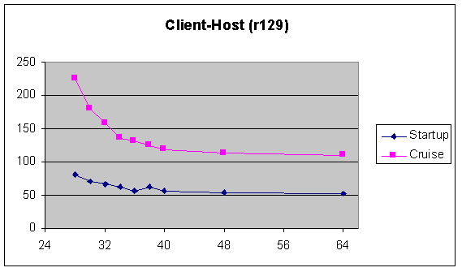

YesterCosm
A collection of memory & performance related info from January 1998
Here is a page dedicated to ideas
for dealing with some of these memory and performance problems
Here is Dave Leahy's list of performance goals for startup, transitions, UI, etc.
ec_perf archives
There's a wealth of information stored in the ec_perf archives.
Master
index of ec_perf threads.
Java
object count after many transitions. Russ' note about memory &
object usage during region transitions. Click
here for a better formatted HTML version of his chart.
OpenRepository()
objects. A note from Russ about the abundance of objects wasted in
openRepository(). Includes recommendations for eliminating many of the
big offenders.
Guesstimates
of working set cost of E class bloat A message from Trev about how
much working set memory we can expect to save by eliminating E class bloat.
What
is the cost of our classes? An analysis by Chip that shows the malloced
bytes used by all of our classes. Grouped by package.
Some
Java 1.2 Results A message from Mike describing the 1.2MB reduction
in working set he saw when comparing between Java 1.1.3 and Java 1.2b2.
Dash-O.
This is a product that Wayne was evaluating. It finds unused methods/variables
and removes them. It also does obfuscation. Now that we're moving to pure
Java, we should more able to use products like these.
java
-ms.Our performance was enhanced by using the java -ms flag. The
best setting we found was 6megs. This will have to be tuned for whatever's
appropriate when we ship.<?LI>
RAM cost per object
[Tony]
I did some tests involving memory and number of una.
I created a simple realm text with one tiny region and one region of
varying size. In my tests I land in the small region and never visit the
other region. This should be measuring the cost of simply hosting una,
and not presenting them.
Here are the numbers (from the NT Task Manger):
Mem is MemoryUsage (working set)
VM is Virtual Memory
| Una |
Mem |
VM |
Mem/una |
VM/una |
| 10 |
20781 |
21669 |
|
|
| 100 |
22001 |
22873 |
15.01 |
23.73 |
| 300 |
25179 |
26355 |
15.60 |
19.52 |
| 500 |
28795 |
29684 |
16.59 |
18.37 |
| 1000 |
31448 |
37933 |
10.95 |
17.43 |
| 1500 |
34359 |
45980 |
9.24 |
16.99 |
| 2000 |
37803 |
54119 |
8.65 |
16.81 |
Depending on whether you trust Mem Usage (aka working set) or Virtual memory,
it seems like we're using 15-20k per object. Woof.
Startup & Usage Times: the memory curve
[Tony]
Paul and I ran a lot of tests back in January, measuring both startup time,
as well as the time it took to do a number of common in-world operations...
Startup Measured from when you select your avatar to when you arrive
in the first region
Test 1 Teleport from AztecTurf to GreatRoundSquare
Test 2 Walk a lap around the GreatRoundSquare
Test 3 Open Address Book window, Catalog window, open basic Catalog
Test 4 Teleport to Red Room, then The City
The 'Cruise' measurements referenced below are The sum of Test1-Test4.
Note that the important thing about this chart is not so much the absolute
numbers, but what happens to the curve when the machine has varying amounts
of memory. The curve appears to flatten somewhere around 40MB, and we get
very little increase in perfomance as we go higher.
Below 40MB, there's simply not enough physical memory to support the
software, and virtual memory paging kicks in.
